Shawn brings firsthand operational experience from across the advanced construction value chain — designing complex structures, leading market transformation, and commercializing next-generation building systems.
Industrialized ConstructionIntelligent City
Market DevelopmentWoodWorks BC
Structural EngineeringFast + Epp
Selected work
Construction Projects
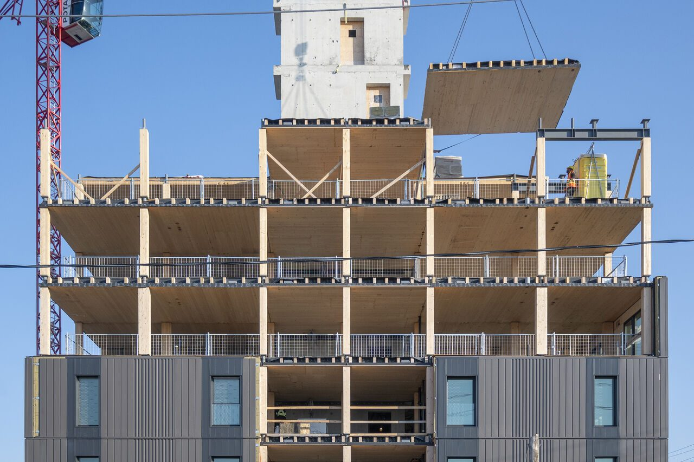
Intelligent City · Building system supplier
Hälsa, 230 Royal York Rd
Toronto, ON
Ontario's tallest mass timber residential building at the time of completion. A 9-storey, 60,000 sf rental housing project built using a prefabricated mass timber structural and high-performance envelope system.
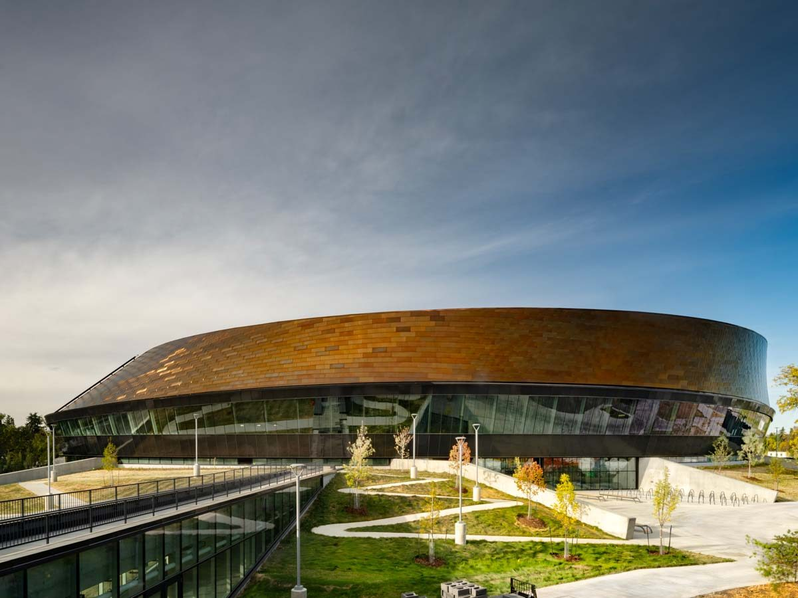
Fast + Epp · Structural engineering
Coronation Park Sports and Recreation Centre
Edmonton, AB
Landmark 183,000 sf recreation facility, and the first use of Mass Plywood Panels (MPP) in Canada. The project uses over 60,000 sf of exposed structural panels across a unique doubly curved facade.
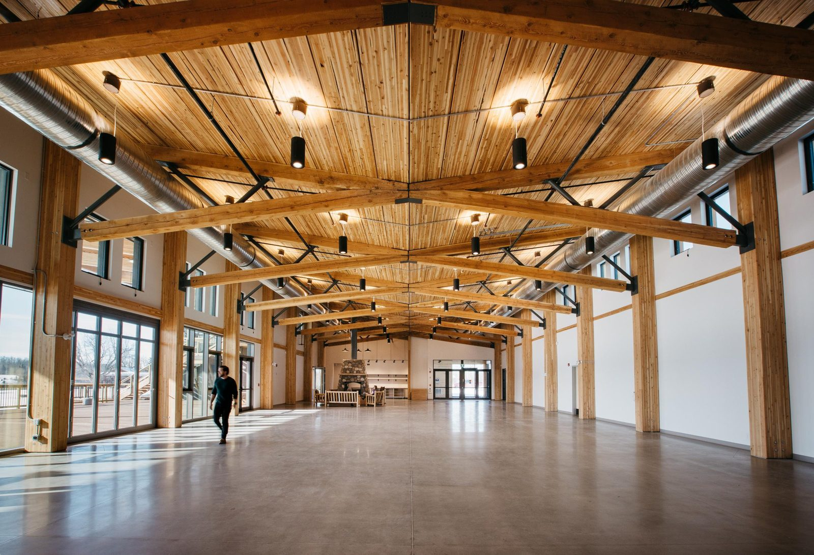
Fast + Epp · Structural engineering
Métis Crossing Cultural Gathering Centre
Smoky Lake, AB
Award-winning cultural destination overlooking the North Saskatchewan River, featuring a long-span assembly hall with a dramatic butterfly-shaped roof framed with glulam decking and intricate heavy timber and steel hybrid trusses.
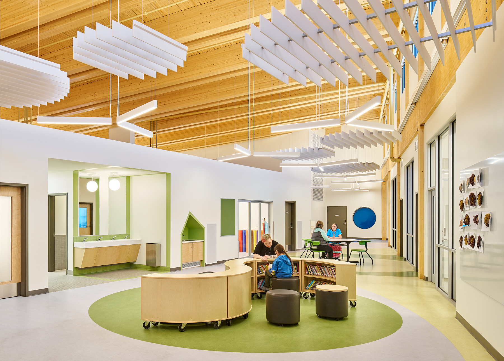
Fast + Epp · Structural engineering
Saddle Lake Onchaminahos School
Saddle Lake, AB
One of Alberta's first mass timber schools, this 44,000 sf, two-storey facility features exposed glulam columns and beams supporting a glue-laminated timber (GLT) floor and roof assembly.
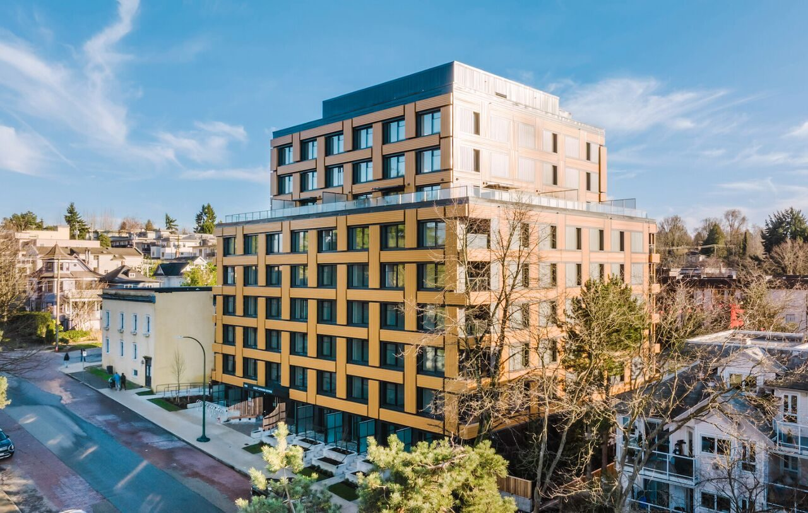
Intelligent City · Building system supplier
Chief Leonard George Building
Vancouver, BC
9-storey, 65,000 sf mixed-use social housing development marking Canada's first tall mass timber Passive House building, utilizing a prefabricated cross-laminated timber (CLT) façade system.
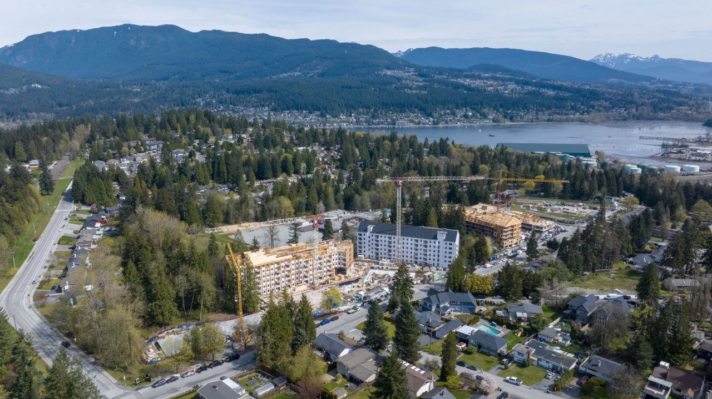
Fast + Epp · Structural engineering
Portwood — Phase I
Port Moody, BC
Multi-phased 23.4-acre master-planned community featuring over 500,000 sf of residential across its initial three phases, utilizing a highly optimized light-frame wood superstructure over a cast-in-place concrete podium.
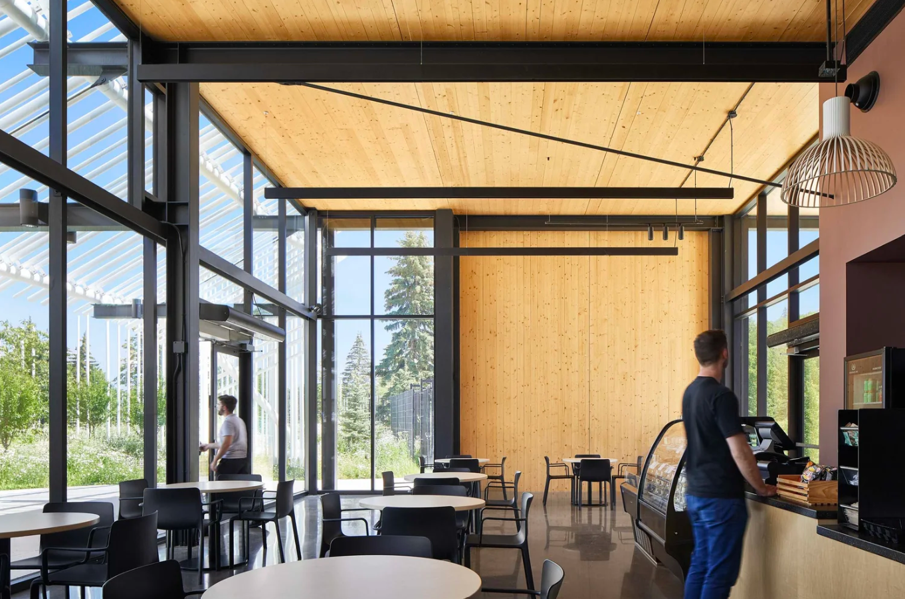
Fast + Epp · Structural engineering
Fort Edmonton Entrance Pavilion
Edmonton, AB
Serving as the gateway to one of Canada's most iconic living-history attractions this pavilion utilizes exposed CLT and steel framing beneath an intricate, custom-fabricated steel palisade wall canopy.
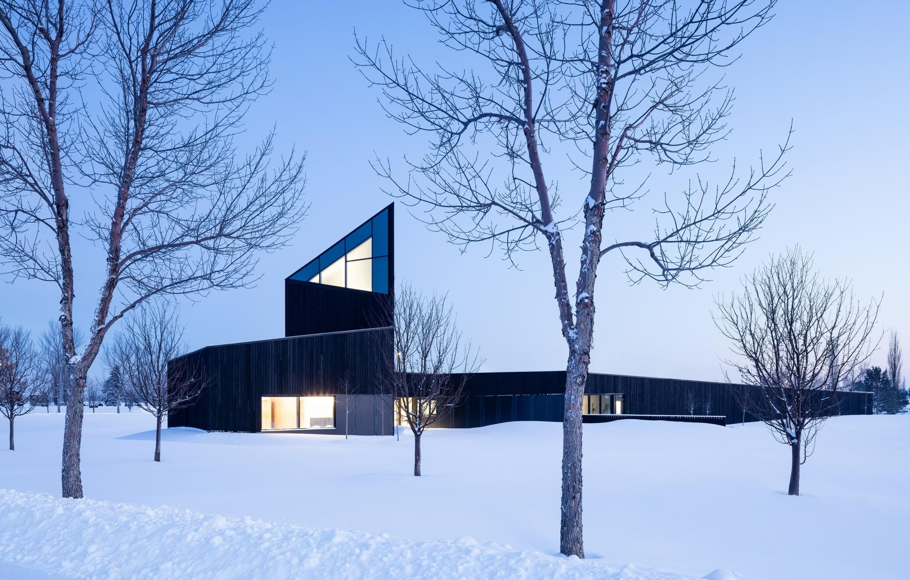
Fast + Epp · Structural engineering
South Haven Centre for Remembrance
Edmonton, AB
A Governor General's Medal-winning facility featuring a 13-metre timber-steel hybrid tower which emerges from the landscape making reference to the existing grave sites, monuments, columbaria, and the latent memory that they embody.
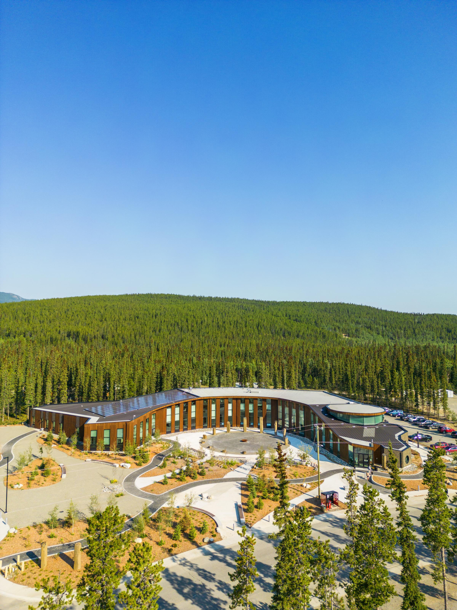
Fast + Epp · Structural engineering
Kashgêk’ Building
Whitehorse, YT
Two-storey, 40,000 sf cultural community building featuring sloping roof lines, supported by a post-and-beam glulam mass timber frame, and an expressive steel king-post-and-cable system.
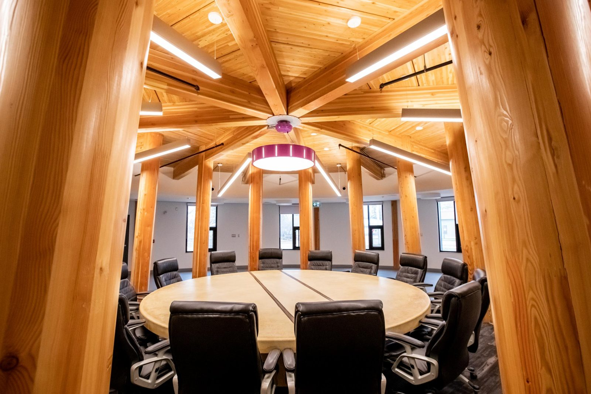
Fast + Epp · Structural engineering
Salt River First Nation Community Facility
Fort Smith, NT
32,000 sf community hub in a remote northern locale, featuring an organic curved footprint inspired by the local Oxbow River and framed with exposed glulam mass timber.
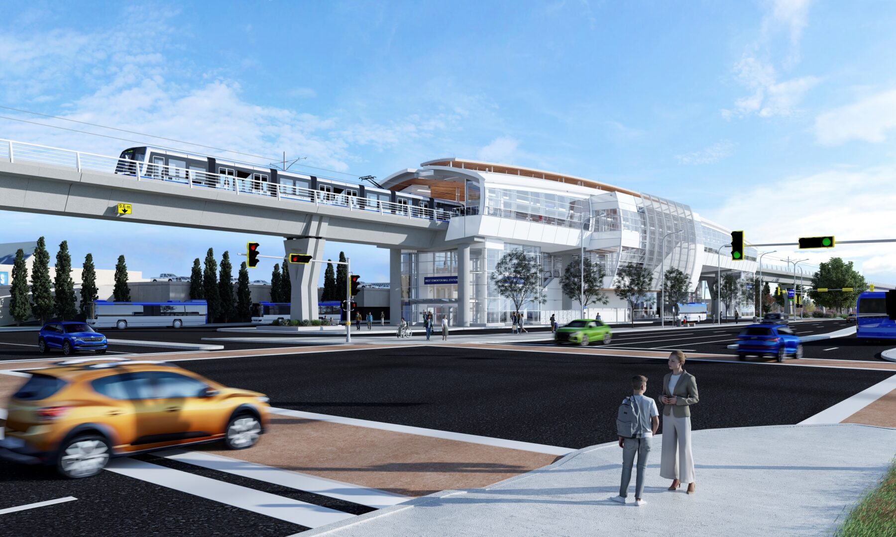
Fast + Epp · Structural engineering
Edmonton Valley Line West LRT
Edmonton, AB
Elevated transit stations at West Edmonton Mall and Misericordia, delivered through a design-build model and featuring unique modular roof systems consisting of prefabricated nail-laminated timber (NLT) and steel framing.
Innovation Projects
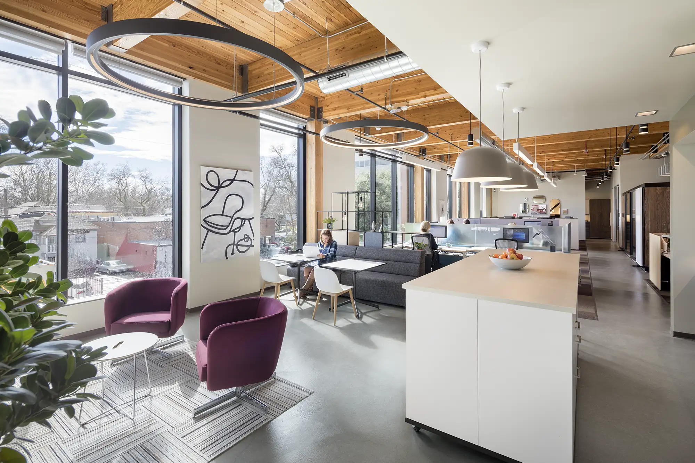
WoodWorks BC
Mass Timber Business Case Studies
The first rigorously quantified financial case studies of real Canadian mass timber projects, providing developers with the data-driven evidence required to de-risk investments and accelerate adoption.
Designed and executed the go-to-market and sales strategy - repositioning the product offering and partnership model to secure de-risked offtake and expand into a commercial-scale facility.
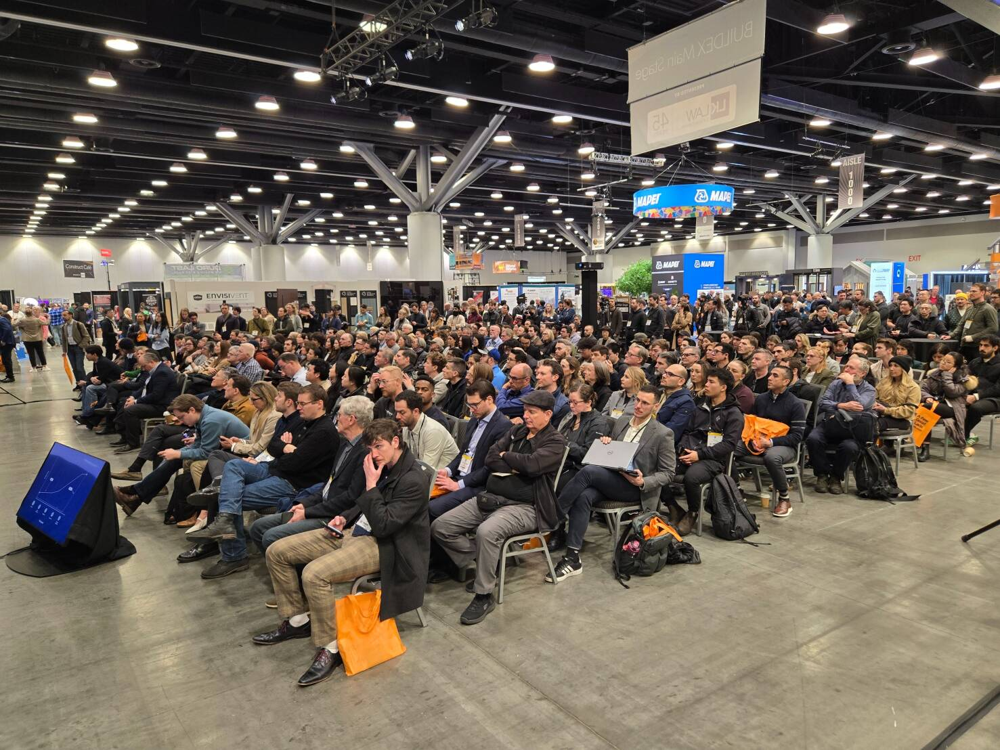
WoodWorks BC
WoodWorks BC Network
Built an ecosystem network of 50-plus companies across the AEC+D and wood-products value chain, creating a durable platform for collaboration, advocacy, and market development.
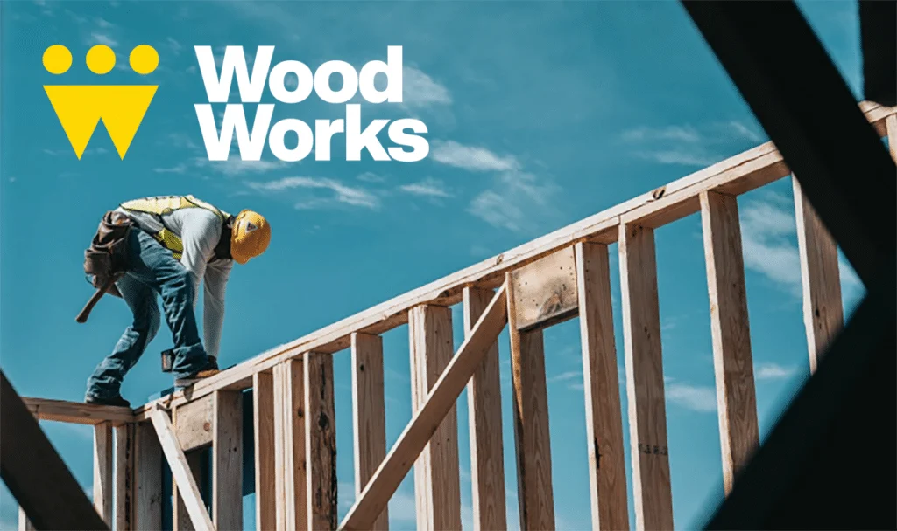
WoodWorks BC
Strategic Plan 2023–2026
Developed and directed the program's strategic plan and governance refresh, driving transformational impact that advanced regulatory policy, pioneered first-of-its-kind programming, and accelerated adoption of wood construction.
WoodWorks BC
Mass Timber Industry Roundtable
Convening 100+ industry leaders, this strategic market research initiative established a unified roadmap of priorities to advance mass timber adoption in Canada accelerating critical educational and policy initiatives.
Innovative Strategies for Light-Frame Mid-Rise Buildings in High Seismic Regions
A technical publication evaluating high-capacity wood shearwall assemblies; protecting the commercial viability of six-storey wood construction under escalating building code seismic forces.
Established landmark partnership with BuildEx Vancouver, shifting from niche events to a mainstream platform that reached thousands of decision-makers, reduced operational costs, and served as a national model for growth.